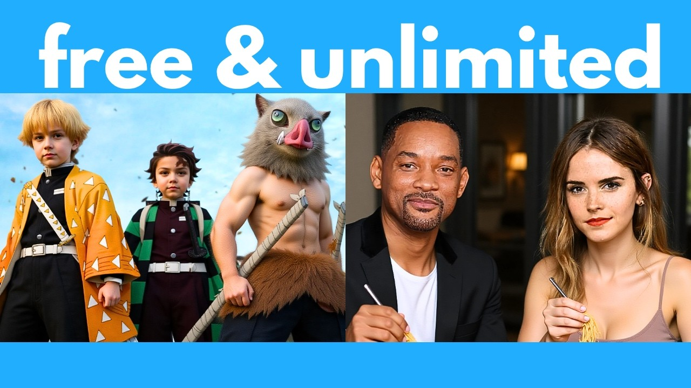

【目前最好用的离线AI图片编辑器Flux Context Dev，完全免费且不限次数】
Summary: Flux Context Dev is a powerful free AI image editor that works offline, capable of tasks like photo restoration, style transfer, face swapping, and text editing while preserving original details.
摘要： Flux Context Dev是一款强大的免费离线AI图片编辑器，能完成照片修复、风格转换、人脸替换和文字修改等任务，同时完美保留原始细节。

⏱️ Estimated Reading Time: 39 min
📚 四级生词 📚 六级生词 📚 雅思生词 📚 托福生词 📚 专八生词 📚 SAT生词 📚 考研生词 📚 GRE生词 📚 高考生词 📚 其它生词生词
Turn this into a realistic photo.
把这张图变成写实风格的照片。
And it absolutely nailed it!
效果简直完美！
Colorize this manga.
给这张漫画上色。
Oh my god, this is way too easy.
天啊，这太简单了。
Or let's change National Geographic into Artificial Intelligence.
或者把《国家地理》改成《人工智能》。
And it did this beautifully while keeping the original font and size of the text.
它完美实现了修改，同时保留了原始字体和文字大小。
Or let's upload this character and create a model sheet with her front, back, and side view.
或者上传这个角色，生成包含正、背、侧视图的角色设定图。
No problem at all.
完全没问题。
Or let's upload this and make them bald.
或者上传这张图让他们变成光头。
Very nice.
效果很棒。
Or let's turn this into Simpson style.
或者转换成《辛普森一家》风格。
Or how about South Park style?
试试《南方公园》风格怎么样？
Alright, let's use a photo of Will Smith and Emma Watson and get them to eat spaghetti together.
来试试用威尔·史密斯和艾玛·沃特森的照片生成他们一起吃意面的画面。
And it nailed this too.
这次也完美实现了。
Very nice.
非常棒。
So last week, I featured this free AI image editor called Omnigen 2.
上周我推荐过一款叫Omnigen 2的免费AI图片编辑器。
Well, forget about that.
现在可以忘掉它了。
This one is way better and faster.
这个工具更强大更快速。
It's called Flux Context Dev and this is hands down the best AI image editor you can use for free right now.
它叫Flux Context Dev，绝对是当前最好用的免费AI图片编辑器。
Now, a few weeks ago, I featured the pro version of Flux Context.
几周前我推荐过Flux Context专业版。
But that one was closed source and you need to pay to use it.
但那是闭源软件且需要付费。
Well, this week, they finally released the open weights version which is called Flux Context Dev.
这周他们终于发布了开源版本Flux Context Dev。
And the best thing is this is completely free for you to download and use offline for unlimited times.
最棒的是你可以无限次免费下载离线使用。
So in this video, I'm going to go over all the incredible things that it can do.
本期视频将展示它的所有强大功能。
Plus, of course, I'm also going to show you step by step how to download and install this on your computer.
同时会逐步演示如何在电脑上安装。
So you can use it for free for unlimited times offline.
这样你就能无限次免费离线使用。
Let's jump right in.
我们直接开始吧。
Here's what the interface looks like.
这是软件界面。
And don't worry, in the latter half of the video, I'm going to go over all these settings.
别担心，视频后半段会讲解所有设置。
But first, let's test this out to show you how good this is.
先通过测试展示它的强大功能。
Let's say you have this photo but there are a ton of annoying tourists in the background.
假设你有这张照片但背景有很多游客。
Well, let's get this AI to remove all these tourists.
让AI移除所有游客。
So I'm going to upload this image here and then for the positive prompt, I'm going to write remove everyone in the background.
上传图片并输入指令"移除背景中的所有人物"。
Let's click run and see what that gives us.
点击运行看看效果。
And here is what we get.
这就是生成结果。
How cool is that?
是不是很酷？
Indeed, it removes all the people from this original image.
确实移除了原图中的所有人。
And if I pull up my terminal, note that I'm running an RTX 5000 ADA which has 16 gigabytes of VRAM and that only took 100 seconds.
我的RTX 5000 ADA显卡（16GB显存）仅用100秒就完成了。
So it's pretty fast.
速度相当快。
And note that your output image is automatically saved in your ComfyUI output folder, as you can see here.
输出图片会自动保存在ComfyUI输出文件夹。
All right, next, let's try something even trickier.
接下来尝试更复杂的操作。
So I'm going to upload this black and white photo with a lot of cracks and blemishes and scratches.
上传这张有裂痕污渍的黑白老照片。
So let's get this AI to restore this.
让AI修复它。
So for the prompt, I'm going to write fix the cracks, folds or scratches on the image.
输入指令"修复图片中的裂痕、折痕和划痕"。
And in fact, let's also colorize this.
顺便进行上色。
So let's press run and see what that gives us.
点击运行查看效果。
And here is what we get.
这是生成结果。
This is ridiculously good.
效果好得离谱。
It indeed removes all these cracks or folds, plus it colorizes the image while preserving all the details including this person's face.
确实消除了所有瑕疵，在上色同时完美保留了人物面部等细节。
I mean, she looks exactly like the woman in the original photo.
和原照片中的女士完全一致。
It doesn't distort her face in any way.
没有任何面部扭曲。
And it was able to do this locally on my computer in just over a minute.
仅用一分钟就在本地完成了处理。
So I mean, this tool is going to be so useful for image restoration.
这工具对图片修复太有用了。
Now, as you can see, Flux Context Dev is really good at colorizing things.
Flux Context Dev非常擅长上色。
So here's another example.
再看个例子。
I'm going to upload this photo of a page from a manga.
上传这张漫画书页。
And then for the prompt, I'm going to write colorize this.
输入指令"上色"。
And here is our result.
这是上色结果。
This is so powerful.
功能太强大了。
You know, in just a few seconds, it was able to turn this line art page into a fully colored page.
几秒钟就把线稿变成全彩页。
Now, if you want specific colors, of course, you can also specify this in the prompt.
当然你也可以指定具体颜色。
But notice how good this is.
但注意效果多好。
It keeps all the details and the text consistent.
完美保留所有细节和文字。
Whereas if you plug this through other AI image editors, it often messes up the text.
其他AI编辑器常会弄乱文字。
But here, everything remains the same as before.
这里所有内容都保持原样。
All right.
好的。
Next, what I'm going to do is upload this image of a fight scene.
接下来上传这张打斗场景图。
And let's convert this into different styles.
转换成不同风格。
First of all, let's try to turn this into anime style.
先试试动漫风格。
Let's press run and see what that gives us.
运行看看效果。
And here is what we get.
生成结果如下。
This is so good at converting something into anime style.
动漫风格转换太出色了。
Like even the background and all the people in the scene are also converted into anime.
连背景和所有人物都转换成了动漫风格。
Like this is the most impressive realistic to anime converter I've come across so far.
这是我见过最棒的写实转动漫工具。
Now, instead of anime style, let's also try 3D Disney Pixar style.
再试试迪士尼皮克斯3D风格。
Let's press run and see what that gives us.
运行查看效果。
And here is what we get.
生成结果如下。
Indeed, it converts this into kind of a Disney Pixar style.
确实转换成了皮克斯风格。
Very cool.
非常酷。
Now, instead of Disney Pixar, let's also try pixel art style.
再试试像素艺术风格。
And let's see what that gives us.
看看效果如何。
And here is what we get.
生成结果如下。
It indeed converts this into pixel art.
确实转换成了像素画。
I mean, this is so good at following my prompt and actually editing the image to whatever I specify.
它能精准遵循指令完成各种编辑。
All right.
好的。
Now, let's try to do some micro edits.
现在尝试一些细节编辑。
So here's the original image.
这是原图。
Let's get it to remove their sunglasses.
移除他们的太阳镜。
And I'm going to put a red scarf on this guy and let's put a cowboy hat on this guy.
给左边的人加红围巾，右边的人加牛仔帽。
So I'm going to write, remove their sunglasses.
输入指令"移除太阳镜"。
Put a red scarf on the man on the left and a cowboy hat on the man on the right.
"给左边男子加红围巾，右边男子加牛仔帽"。
Let's press run and see if it can figure this out.
运行看看效果。
And here is what we get.
生成结果如下。
Indeed, it adds a red scarf to this man plus a cowboy hat to this man.
确实添加了红围巾和牛仔帽。
And it removes their sunglasses.
并移除了太阳镜。
It even keeps the original expression.
甚至保留了原始表情。
So again, it's really good at preserving the details of the original photo and only editing the parts which I specify.
再次证明它能完美保留原图细节，只修改指定部分。
This is such a powerful tool.
这工具太强大了。
All right.
好的。
Next, let me upload this meme photo.
接下来上传这张表情包图片。
And for the prompt, let's put, make them bald.
输入指令"让他们变秃头"。
And here's our result.
生成结果如下。
It does make them bald while keeping their faces consistent.
确实变成了秃头且保持面部特征。
Like these still do look like the original characters.
依然像原角色。
So this is really good at micro editing.
非常擅长细节编辑。
Or instead of making them bald, let's turn them into Simpson style.
或者转换成《辛普森一家》风格。
And here is what we get.
生成结果如下。
This is way too easy.
这太简单了。
Or instead of that, let's turn them into South Park style.
再试试《南方公园》风格。
And here's what we get.
生成结果如下。
Very impressive.
非常惊艳。
Indeed, it turns this into South Park style while preserving the details of everything.
确实转换成了南方公园风格且保留所有细节。
All right.
好的。
Next, let's see if it can remove watermarks and other stuff.
接下来测试去水印功能。
So I'm going to upload this gameplay scene from Genshin Impact.
上传这张《原神》游戏画面。
And let's try to get it to remove all these buttons in this user interface.
尝试移除所有UI按钮。
So let's just put something like remove the UI.
输入指令"移除UI"。
And let's press run and see if it can figure this out.
运行看看效果。
And here is what we get.
生成结果如下。
It removes all the elements from the user interface.
移除了所有UI元素。
Really impressive.
令人印象深刻。
All right.
好的。
Next, I'm going to upload this image with a ton of copyright watermarks.
上传这张带大量版权水印的图片。
And then for the prompt, I'm going to write remove all the watermarks.
输入指令"移除所有水印"。
Let's press run and see what we get.
运行查看效果。
How cool is that?
太酷了吧？
It indeed removes all the watermarks from the original image.
确实移除了所有水印。
There's not a lot of AI image editors that can actually do this very well.
很少有AI编辑器能做得这么好。
But Flux Context is able to ace this.
但Flux Context做到了。
Plus, this dev version is completely free and open source.
而且这个开发版完全免费开源。
Now, Flux Context is actually really good at changing text while preserving the original font.
Flux Context还能在保留原字体的情况下修改文字。
So let me upload this cover of a National Geographic magazine.
上传这张《国家地理》杂志封面。
And then for the prompt, I'm going to put change the text from National Geographic to Artificial Intelligence.
输入指令"将文字National Geographic改为Artificial Intelligence"。
Let's press run and see what that gives us.
运行看看效果。
And here we go.
生成结果如下。
It handles this beautifully.
处理得非常完美。
It indeed changes the text National Geographic to Artificial Intelligence while preserving the original size and font.
确实修改了文字且保留原始大小和字体。
It also doesn't affect the rest of the image.
其他部分完全不受影响。
So the rest of the text at the bottom still remain the same and unaltered, which is great.
底部其他文字保持原样。
If you tried doing this with other AI image editors and you have text somewhere else in the image, often it would mess this up.
其他AI编辑器常会弄乱图片中的其他文字。
But here, it handles it very well.
但这个工具处理得很好。
It only changes the text that I specified.
只修改了指定文字。
All right, next, I'm going to upload this fake driver's license and let's change the license number.
接下来上传这张假驾照，修改证件号码。
So for the prompt, I'm going to put change the number from 134711320, which is this number over here.
输入指令"将号码134711320（此处数字）"。
And let's set that to 696969-69.
"改为696969-69"。
Let's press run.
点击运行。
Oh my God, would you look at that?
天啊快看！
It absolutely nailed it.
完全成功了。
It indeed changed this number to what I specified while keeping the rest of the details of this license intact.
确实修改了号码且保留驾照其他所有细节。
Super impressive.
超级厉害。
Or here's another crazy thing you can do.
还有个神奇功能。
You can take someone's ID and generate an image of them doing anything.
可以用证件照生成该人物的任何场景图片。
So for the prompt, let's try the man is in a cozy cafe.
输入指令"这个男子在舒适咖啡馆"。
Let's press run and see what that gives us.
运行查看效果。
And would you look at that?
快看这个！
This indeed is a photo of this man in a cozy cafe.
确实生成了他在咖啡馆的照片。
I mean, this tool is so powerful for creating deep fakes.
这工具制作深度伪造太强大了。
You can easily generate a photo of anyone doing anything.
可以轻松生成任何人的任何场景照片。
And I mean, this looks exactly like this guy.
而且和本人一模一样。
All right, next, let's try something even harder.
接下来尝试更高难度操作。
So I'm going to upload this photo of a kingfisher.
上传这张翠鸟照片。
And right now, it's pretty far away.
目前拍摄距离较远。
So let's get it to zoom in and make this a more professional looking photo.
进行变焦处理，做成专业级照片。
For the prompt, I put zoom in on the bird, ultra sharp details of the bird, professional wildlife photography.
输入指令"对焦鸟类、超清晰细节、专业野生动物摄影"。
And here is what we get.
生成结果如下。
Indeed, it zooms in on this photo and it adds more details to the overall bird while keeping everything else the same.
确实实现了变焦并增强了鸟类细节，其他部分保持不变。
Like the fish over here and the pose of this kingfisher, plus this lotus flower remains the same.
包括鱼、翠鸟姿态和莲花都保持原样。
All right, next, let's try this.
接下来试试这个。
I'm going to upload this photo and I deliberately made this a lot darker.
上传这张故意调暗的照片。
I changed the brightness and contrast and I messed up the white balance.
调整了亮度和对比度，弄乱了白平衡。
So let's plug it through this AI.
用AI修复。
And for the prompt, let's put change the brightness, contrast and white balance to make this look ideal.
输入指令"调整亮度、对比度和白平衡至最佳效果"。
Let's press run and see if it can handle that.
运行看看效果。
And here is what we get.
生成结果如下。
Notice that if you compare this with the original photo, it just looks way better.
对比原图效果提升明显。
So, you know, forget about Photoshop.
所以可以忘记Photoshop了。
You don't need to manually figure out, you know, the right settings for brightness, contrast, saturation, etc.
无需手动调整亮度、对比度、饱和度等参数。
You can just plug it through this AI and it would automatically polish a photo for you like this.
用AI就能自动优化照片。
How awesome is that?
是不是很棒？
Or let's try this.
再试试这个。
I'm going to upload this scene from Demon Slayer and let's turn this into a realistic photo.
上传《鬼灭之刃》场景图，转换成写实照片。
So I'm going to write, turn this into a realistic photo.
我要输入指令：将其转为逼真照片。
Let's press run.
点击运行。
And here is what we get.
这就是生成的结果。
Absolutely unreal.
效果太惊艳了。
I mean, this has got to be the best anime to realistic converter I've come across.
这是我见过最棒的动漫转真实效果工具。
I mean, before, if you're using flux or stable diffusion, you need to plug this into image to image and then select a realistic Laura and then convert that, which is a lot more steps.
以前用Flux或Stable Diffusion时，需先进入图生图模式，再选择真实风格Lora才能转换，步骤繁琐得多。
But for here, with just one prompt, I was able to do this.
但现在只需一句指令就能完成。
And notice how, again, it keeps the consistency and the details of the original image, including the outfits and the poses of everyone.
注意它完美保留了原图的一致性细节，包括服装和人物姿势。
This is such a game changer.
这简直是革命性的突破。
I also tried uploading this image of Ash and Pikachu.
我又尝试上传了小智和皮卡丘的图片。
And then for the prompt, I put turn into realistic photo, Asian boy and Pikachu.
输入指令："转为真实照片，亚洲男孩和皮卡丘"。
And here is what I got.
这是生成效果。
It indeed turns this into a realistic photo while preserving the details of everything in the original photo.
确实转换成了真实照片，同时保留了原图所有细节。
Now, I don't know about you, but Pikachu should look cuter than this.
不知道你们怎么看，但皮卡丘本该更可爱些。
I mean, it looks kind of scary over here.
现在看起来有点吓人。
Let me know in the comments what you think.
欢迎在评论区分享你的看法。
If you've been following my channel, you'll know that I'm obsessed with finding the best AI video generators.
老观众都知道我痴迷于寻找最佳AI视频生成工具。
And right now, the best one you can use is definitely Hylo, the sponsor of this video.
目前最推荐的是本期赞助商Hylo。
They've just released Hylo 02, a state-of-the-art video model that excels in prompt understanding, physics, camera control and overall coherence.
刚发布的Hylo 02是顶尖视频模型，擅长指令理解、物理模拟、镜头控制和整体连贯性。
Just look at how accurate and consistent these generations are.
看这些生成效果多么精准一致。
It's built on a new architecture called noise-aware compute redistribution, which boosts both training and inference by a lot.
采用全新"噪声感知计算重分配"架构，大幅提升训练和推理效率。
Getting started is super easy.
上手非常简单。
Just click on video and enter a prompt describing the video you want to create and you're good to go.
点击视频按钮，输入描述指令即可开始。
You can even upload an image to use as a starting frame for more control.
还能上传图片作为起始帧加强控制。
Plus, you can insert different camera movements throughout your prompt to make your generations even more cinematic.
还可在指令中添加镜头运动参数，让生成效果更具电影感。
They also have this new agent feature, which offers a ton of pre-built templates and styles so you can easily create videos with just one click.
新增智能代理功能，提供海量预设模板，一键生成视频。
Let's try this template where we get an animal doing an acrobatic dive at the Olympics.
试试这个"动物奥运跳水"模板。
So let's upload this pug and then press create.
上传这只哈巴狗点击创建。
This is like an autonomous agent that decides how to process your image and create a video from that based on the template.
这是个自主代理系统，会根据模板处理图片并生成视频。
And here's our result, complete with sound.
这是带音效的成品。
Click the link in the description below and try Hylo 02 today.
点击描述区链接立即体验Hylo 02。
All right, next, let's try something different.
接下来尝试些不同的。
I'm going to upload this character and then for the prompt, let's get it to make a model sheet of this character.
上传这个角色，输入指令："生成角色三视图"。
It's going to be a full-body shot consisting of a front, back and side view.
需要包含正面、背面和侧面全身图。
Now, because this original image is a vertical image, so if we just generate a new image in the same aspect ratio, it's not going to be able to fit three views into this image.
由于原图是竖版，若保持比例就无法容纳三视图。
So instead, let's turn this into a square image.
因此改为正方形画布。
Now, in order to change the aspect ratio or dimensions of your output image, you would need to go up here and then right click on this and then click bypass to unbypass this.
要修改输出尺寸，需右键点击这里取消旁路。
And then here is where you would set the width and the height of your final image.
在此处设置最终图像的宽高。
So it says over here, we need to connect this node to KSampler.
提示需要将这个节点连接至KSampler。
So let's drag this and connect it over here.
拖动连接即可。
And that's all we need to do to control for the size of the output image.
这样就能控制输出尺寸了。
So let's click run and see what that gives us.
点击运行查看效果。
Perfect.
完美。
So here is what we get.
这就是生成结果。
As you can see, our original image is vertical, but here it's 1024 by 1024.
原图是竖版，但输出是1024x1024。
And it indeed generates a model sheet of this character with a front, back and side view.
准确生成了带三视图的角色设定图。
Very impressive.
令人印象深刻。
So you can see with this tool, you can easily generate multiple views of any characters and use this for 3D modeling or character design.
可见这个工具能轻松生成多视角角色图，适用于3D建模和角色设计。
All right.
好的。
Now, so far, I've only shown you examples where we upload one image.
目前只演示了单图上传。
What if we want to upload multiple reference images?
如何上传多张参考图？
Now, in order to do that, we need to click on this node and then right click and then click on bypass.
需右键点击该节点选择旁路。
And then afterwards, let's upload some reference photos.
然后上传参考照片。
I'm going to upload Will Smith and then Emma Watson over here.
上传威尔·史密斯和艾玛·沃特森。
And then for the prompt, let's write, they are eating spaghetti together.
输入指令："他们正在一起吃意面"。
Now, going back up here again, here is where you can define the width and height of your final image.
返回此处设置最终图像尺寸。
So let's unbypass this and then connect this to over here.
取消旁路并连接节点。
And let's just leave it at the default of 1024 by 1024.
保持默认1024x1024。
And that's pretty much it.
这样就完成了。
Let's click run.
点击运行。
And here's what we get.
这是生成效果。
So not exactly the results I was going for.
不完全符合预期。
You can see this final image kind of retains the original background from these images.
成品保留了原图的背景。
So let's prompt it a bit better.
优化下指令。
Let's add together on the same table in a fancy restaurant.
加上"在高级餐厅同桌用餐"。
Let's press run and see if that's any better.
再次运行看看效果。
All right.
好了。
This is more like it.
这次好多了。
So indeed, we have Will Smith and Emma Watson together on the same table in a fancy restaurant.
成功生成二人在高级餐厅同桌的画面。
And notice that in the prompt, I didn't specify Will Smith or Emma Watson.
注意指令中并未提及二人名字。
It generated these completely based on my input reference images.
完全根据参考图生成。
And notice that they look exactly like Will Smith and Emma Watson.
且与真人高度相似。
This is the most realistic and accurate face swap or deepfake tool you can use right now for free.
这是目前最逼真精准的免费换脸/深度伪造工具。
Now, instead of like deepfakes or face swapping, you can also use this as a clothes swapper.
除换脸外，还能用于服装替换。
So for example, let me upload this dress.
比如上传这条裙子。
And then for the prompt, let's put the woman is wearing the dress at the beach.
输入指令："女士穿着这条裙子在海边"。
And then up here, this time, let's set the output image to a vertical image.
这次设置竖版输出。
So I'm going to set the width to 768.
宽度设为768。
Let's press run and see what that gives us.
运行查看效果。
And here is what we get.
生成结果如下。
It indeed makes Emma Watson wear this dress at the beach.
成功让艾玛·沃特森穿上这条裙子。
And this does look like Emma Watson.
与本人非常相似。
Plus the dress looks exactly like the reference image.
裙子也完美还原参考图。
So this is also a super powerful and accurate clothes swapper.
因此这也是极其精准的服装替换工具。
Clothing brands can easily use this to generate images of people wearing their catalog.
服装品牌可用它快速生成模特穿着效果图。
Next, let's try something even trickier.
接下来尝试更高阶操作。
I'm going to upload this image of a storefront with this design on the window.
上传这张带橱窗设计的店铺照片。
And for the prompt, let's put midshot photo of the woman.
输入指令："女士中景照片"。
She is wearing a white bikini at the beach.
"穿着白色比基尼在海边"。
Extract the design on the window and use it as a small tattoo on the woman below her collarbone, left side.
"提取橱窗图案作为左锁骨下方的小纹身"。
And here we go.
开始生成。
How awesome is that?
太神奇了！
Indeed, it extracts the exact design from this window and adds it as a tattoo below her left collarbone.
准确提取橱窗图案并转化为左锁骨下方的纹身。
And this indeed looks like Emma Watson.
人物依然是艾玛·沃特森。
Very nice.
非常棒。
All right, finally, let's also test out how good it is at preserving character consistency.
最后测试角色一致性保持能力。
So I'm going to upload two photos of anime characters with pretty complicated outfits.
上传两张服装复杂的动漫角色图。
And then for the prompt, let's write, they are kissing each other lying in bed.
输入指令："他们在床上接吻"。
And here's what we get.
生成效果如下。
Indeed, it's these two characters kissing in bed.
确实是这两个角色在床上接吻。
Notice that the design of their outfit is pretty complicated, but it was able to transfer everything over to this final image.
尽管服装设计复杂，但所有细节都完美迁移。
So this is incredibly good at maintaining the look and design of your reference characters.
在保持参考角色外观设计方面表现惊人。
So that sums up all the cool things you can do with Flux Context Dev.
以上就是Flux Context Dev的强大功能。
Again, this is completely free and open source.
重申：完全免费开源。
You can download it locally and run it for unlimited times.
可本地安装无限次使用。
And this can do so many things, including face swapping, creating deep fakes of reference characters, virtual try on, or even style transfer.
支持换脸、深度伪造、虚拟试穿和风格转换等。
You can convert a realistic image to anime or do the reverse.
可实现真实转动漫或反向转换。
You can convert an anime image into a realistic photo.
将动漫图片转为真实照片。
You don't need Lora's or anything.
无需Lora等额外组件。
It does everything right out of the box.
开箱即用。
This is hands down the most powerful and most consistent AI image editor you can use offline.
毫无疑问是最强大、最稳定的离线AI图片编辑器。
All right, so those are some examples.
以上就是功能演示。
Next, let's go over how you can actually install this and run it for unlimited times on your computer.
接下来讲解安装方法。
Now, there are several ways you can install this, but one of the most flexible and intuitive ways to use this is using Comfy UI.
推荐通过Comfy UI安装，最灵活直观。
Note that on the official Comfy UI workflow for this, it says this requires about 20 gigabytes of VRAM, which is not true.
官方称需要20GB显存，实际并非如此。
I'm running this on only 16 gigabytes and it could still generate images in just over a minute.
我在16GB显存设备上运行，生成仅需1分多钟。
And then here it seems like the absolute minimum VRAM you need is 8 gigabytes.
最低只需8GB显存。
But I mean, Comfy UI is pretty forgiving even if you have lower VRAMs, so it doesn't hurt to try this out.
即使显存更低也可尝试，Comfy UI兼容性很好。
And on their official page, they've already released instructions on how you can install Context Dev.
官网已发布详细安装指南。
In this tutorial, I'm going to assume you already have Comfy UI installed.
本教程假设已安装Comfy UI。
If you're not familiar with Comfy UI, definitely see this tutorial where I go over how to install it and use it.
不熟悉Comfy UI可参考我的安装教程。
It's actually really easy to use once you get the hang of it.
上手后非常简单。
All right, so going back to here, let's go over the instructions.
回到安装步骤。
So first, we need to download this Flux Dev Context FP8 Safe Tensors file by clicking this link.
首先点击链接下载Flux Dev Context FP8模型文件。
And this will go in my Comfy UI folder, in Models, and then Diffusion Models.
保存至Comfy UI文件夹的Models/Diffusion Models子目录。
Let's press Save.
点击保存。
Now note that this is 11.1 gigabytes, so it's going to take a while for this to download.
注意该文件11.1GB，下载需要时间。
Now, after downloading this, you also need to download this AE.Safe Tensors file.
接着下载AE.Safe Tensors文件。
So let's click on this.
点击这个。
And then over here, let's click Download.
选择下载。
Now, this one goes in Comfy UI, in Models, and then in VAE.
保存至Models/VAE子目录。
So you can see that I already have this over here.
我这里已存在该文件。
And then the next step is we also need to download this Clip-L.Safe Tensors file.
下一步下载Clip-L.Safe Tensors文件。
So let's click on this and then click Download.
点击下载。
And this one goes in Comfy UI, and then Models, and then Text Encoder.
保存至Models/Text Encoder子目录。
As you can see, I already have it here.
我这里也已存在。
And then finally, you can either choose to download this FP16 one or this FP8 one.
最后选择下载FP16或FP8版本。
If you have a low VRAM GPU, then this one would run a lot faster at the sacrifice of some quality.
低显存设备建议选FP8，速度更快但画质略有牺牲。
But it's very minimal, so I'm going to click on this one.
差异很小，我选择这个。
And this also goes in Comfy UI, and then Models, and then Text Encoders.
同样保存至Text Encoders子目录。
As you can see here.
如图所示。
Note that this is 5 gigabytes in size.
注意该文件5GB大小。
All right, afterwards, that's pretty much it.
至此准备工作完成。
So let's start up Comfy UI.
启动Comfy UI。
Now, the nice thing about Comfy UI is you don't actually need to program all these nodes and noodles from scratch.
Comfy UI的优势在于无需从头构建节点。
You can just take an existing workflow and drag and drop it onto your interface.
直接拖拽现有工作流即可。
So for example, here, we can actually download this image and then drag and drop it onto Comfy UI.
比如下载这张图片拖入界面。
So I'm going to right click and then Save this.
右键另存为。
And you can save it anywhere.
可保存至任意位置。
I'm just going to save this in my Comfy UI folder.
我选择Comfy UI文件夹。
And after that's done, let's just drag and drop it onto here.
完成后拖入界面。
And voila, here is the full workflow pre-built for you.
瞧，完整工作流已自动构建。
You don't have to program any of this from scratch.
无需手动编程。
Now, when you load this up, if you see any missing nodes or basically any components that are outlined in red, make sure you click on Manager and then click Update Comfy UI.
现在，当您加载时，如果看到任何缺失节点或用红色标出的组件，请点击Manager，然后点击Update Comfy UI。
After you update to the latest version, all of these components should be available out of the box.
更新到最新版本后，所有这些组件应该可以直接使用。
All right, next, let's go over this workflow and what these settings actually do.
好的，接下来我们来看看这个工作流程以及这些设置的实际作用。
So first of all, here is where we load the image editor model, which in our case is FlexDevContext FP8.
首先，这里是我们加载图片编辑器模型的地方，本例中为FlexDevContext FP8。
Click into this and then select the one that you just downloaded.
点击这里，然后选择您刚刚下载的模型。
And then we also need to load some other models to make this work.
我们还需要加载其他一些模型才能使其工作。
So these are basically the files that we downloaded.
这些基本上就是我们下载的文件。
Make sure you click on each one and select the one from the drop-down list, which you just downloaded.
确保点击每一个并从下拉列表中选择您刚刚下载的模型。
And then same with this one.
这个也一样。
This is the VAE, which basically handles the encoding of the image and the decoding of the image.
这是VAE，主要负责图像的编码和解码。
So again, make sure you click on this drop-down and then select AE.SafeTenters.
再次确保点击下拉菜单并选择AE.SafeTenters。
And then over here is where you would enter your prompt, describing how you want to edit the image.
然后在这里输入您的提示，描述您想如何编辑图片。
Pretty simple.
非常简单。
Over here is where you would upload an image to use as a reference.
这里可以上传一张图片作为参考。
And then over here is the guidance scale.
这里是引导比例。
This basically determines how much it should follow both your reference images and your text prompt.
这决定了AI在多大程度上遵循您的参考图片和文本提示。
So if you find that your generation doesn't really look like your reference images enough, or it's not really following your text prompts, you can increase this value further and see if it makes it any better.
如果您发现生成的图片与参考图片不够相似，或者没有很好地遵循文本提示，可以增加这个值看看是否有所改善。
If you decrease this value, then basically the AI can be more creative and not follow your input data as much.
如果降低这个值，AI会更有创造力，不会那么严格遵循输入数据。
I just tend to leave this at the default.
我通常保留默认值。
Next, your prompt and your uploaded image would go through this case sampler, which basically processes your data and generates an image from that.
接下来，您的提示和上传的图片会经过这个case sampler处理，最终生成一张图片。
Now, the seed is basically the starting point of your image.
种子值基本上是您图片的起点。
So usually you don't need to change the setting, but if you have the exact same prompt and image and the exact same settings, and you set the same seed, you're going to get the same image as before.
通常不需要更改这个设置，但如果使用完全相同的提示、图片和设置，并设置相同的种子值，您会得到与之前相同的图片。
And then the number of steps is basically how many steps you want the AI to go through before generating your final image.
步数基本上是AI在生成最终图片前需要进行的步骤数量。
In general, the more steps you have, the higher the quality of the image will be.
一般来说，步数越多，图片质量越高。
But at a certain point, you're going to get diminishing returns.
但到了一定程度后，效果提升会逐渐减弱。
So usually the step count of like 20 to 30 steps is good enough.
所以通常20到30步就足够了。
And then if you set this to a lower value, then your generation is going to be faster because it takes fewer steps to run, but you're going to sacrifice some quality.
如果设置更低的步数，生成速度会更快，但会牺牲一些质量。
And then the rest of the settings, I just leave it at the default.
其余设置我保留默认值。
And that's pretty much it.
基本上就是这样。
That's how you can get this workflow up and running on your computer.
这就是如何在您的电脑上运行这个工作流程。
And that sums up my review and installation tutorial of Flux Context Dev.
以上就是我对Flux Context Dev的评测和安装教程。
This is hands down the best free and open source image editor you can use right now.
这是目前最好的免费开源图片编辑器。
Definitely try this out.
一定要试试看。
I think you'll be very impressed by its capabilities.
我想您会对它的功能印象深刻。
Let me know in the comments what you think of this.
在评论区告诉我您的想法。
And if you run into any errors during the installation, welcome to copy and paste the error messages in the comments below, and I'll try to help you troubleshoot as much as possible.
如果在安装过程中遇到任何错误，欢迎在评论区复制粘贴错误信息，我会尽力帮您解决。
As always, I will be on the lookout for the top AI news and tools to share with you.
一如既往，我会继续关注顶级AI新闻和工具与您分享。
So if you enjoyed this video, remember to like, share, subscribe, and stay tuned for more content.
如果您喜欢这个视频，请记得点赞、分享、订阅，并继续关注更多内容。
Also, there's just so much happening in the world of AI every week.
此外，AI领域每周都有很多事情发生。
I can't possibly cover everything on my YouTube channel.
我无法在YouTube频道上涵盖所有内容。
So to really stay up to date with all that's going on in AI, be sure to subscribe to my free weekly newsletter.
要真正了解AI领域的最新动态，请订阅我的免费每周通讯。
The link to that will be in the description below.
链接在下方描述中。
Thanks for watching and I'll see you in the next one.
感谢观看，我们下期再见。